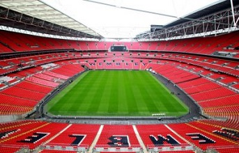

| INICIO | TOTTENHAM |
HistoriaTottenham Hotspur Football Club, es un club de fútbol inglés situado en Tottenham, Londres, que compite en la Premier League desde su inauguración (véase FA Premier League 1992 - 93). Ejercía de local en White Hart Lane, que posee capacidad para 36.284 espectadores hasta su demolición en 2017. Actualmente juega de local en el Wembley Stadium de Londres hasta que termine la construcción de su nuevo estadio. |
Escudo |
|
||||||||||||||
Estadio |
Tecnico |
Capitan |